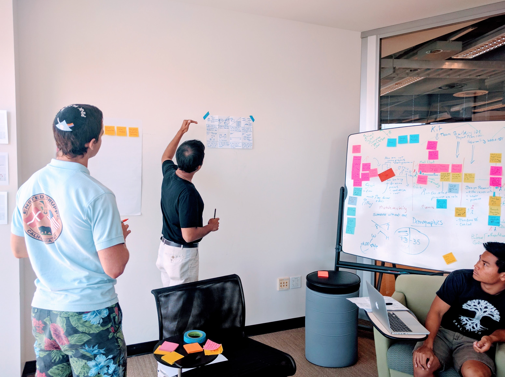

Matchmaker
Made for: SAP and the Design Lab
Time: 3.5 months
Tools: Sketch, Invision
Challenge:
How might we better prepare students for the needs of tomorrow by reimagining higher education?
Solution:
We propose Matchmaker, a system that matches design-led courses with real-world problems for students to work on.
My Role
I collaborated with SAP designers on behalf of the design lab to conceptualize a platform that matches educators and classes to real world projects. I conducted competitive analysis, made wireframes, and designed an interactive storyboard prototype to communicate the idea behind the Matchmaker.
Context
Since 2015, SAP's design team has been reseraching the education space, which ultimately led them to partner with the Design Lab. After conducting extensive research at 6 different colleges and with over 20 professors, SAP came to the following fundamental insight:
"Students are coming out of university unprepared for the challenges of the workforce"
This journey map depicts the typical college experience:

Curious about what was currently being done to address this problem, we conducted a competitive analysis:

We learned that:
1. Project-based courses are crucial for applying knowledge to labor, however, they are confined to the university bubble.
2. The emergence of hackathons and industry-focused clubs show that students are aware of the issue, however, this is not enough to solve it.
3. Schools that host capstone courses, where students can work on corporate sponsored projects have an advantage, however, these programs are limited.
Reframing the problem and rapidly prototyping ideas
 We wondered, what's stopping educators from introducing real-world projects into their classrooms? So, we quickly storyboarded this concept and presented it to professors to get their input.
These are the main insights we got:
Working with industry is tricky; educators don't want their students to be seen as free labor
Successful engagements with industry involve alumni that the educators already trust
To make it work, educators would need freedom in reframing the "industry problem" into a "teaching problem" as well
With this in mind, we developed our solution.
Solution
Matchmaker is a system that matches Educators and classes with real-world problems that have appropriate flexibility and commitment. The goal is to encourage Educators to adopt these projects for their students, resulting in students coming out better prepared for the real-world.
We ended up prototyping it in the form of a physical storyboard with an interactive portion. Ultimately, we pitched the idea at a workshop for design thinking educators and got valuable feedback on how to improve it. More on that soon, but in the meantime –
Check out the storyboard here told from an industry perspective.